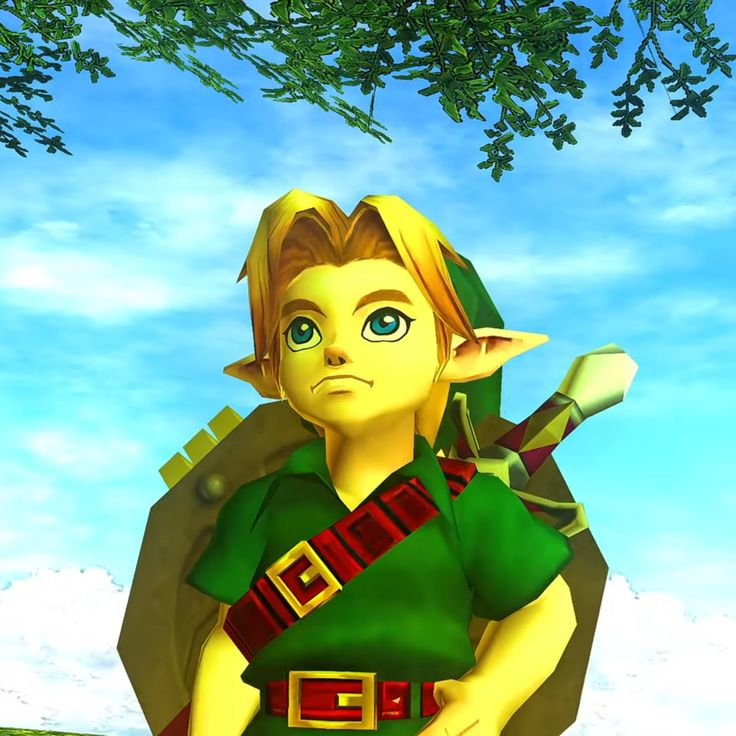
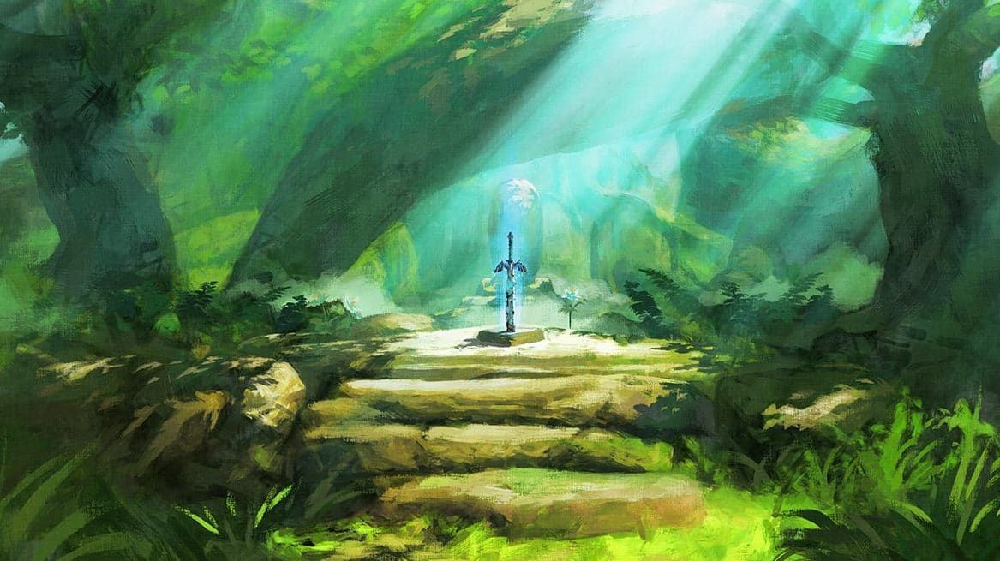
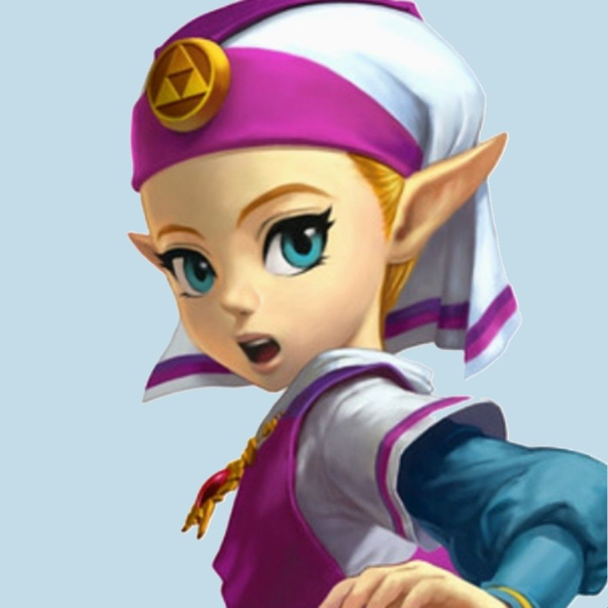
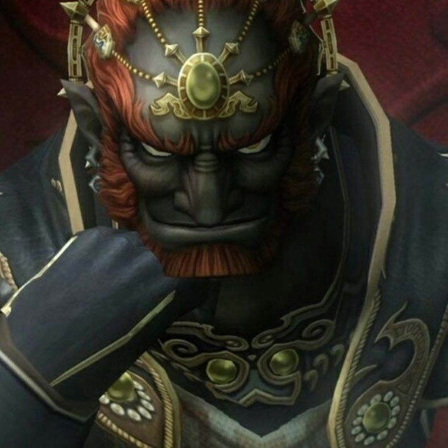
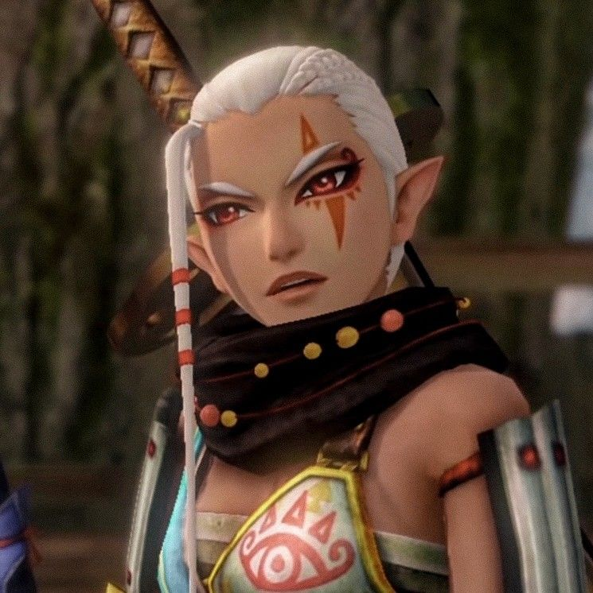
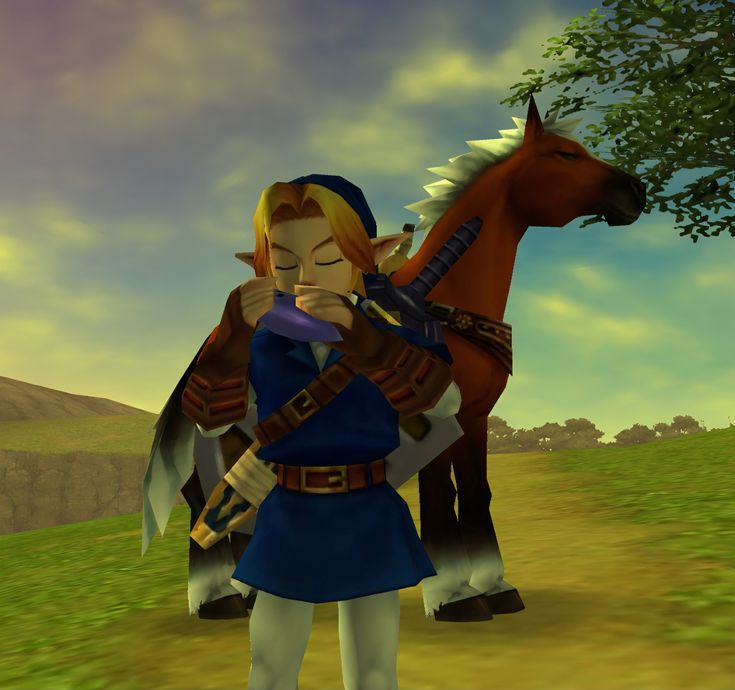
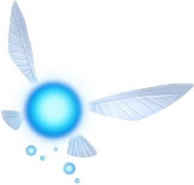

Link
O Herói da Coragem
Protagonista da série. Um jovem corajoso que renasce a cada era para defender Hyrule. Apesar de ser o herói, quase nunca fala.

A Lenda de
Coragem, Sabedoria e Poder. Uma jornada eterna pelo reino de Hyrule, onde heróis renascem a cada era para enfrentar as trevas.
A Saga
The Legend of Zelda é uma das franquias mais icônicas da história dos videogames, criada por Shigeru Miyamoto e Takashi Tezuka para a Nintendo em 1986. A série mistura ação, aventura, exploração e resolução de quebra-cabeças em vastos mundos de fantasia.
A maioria dos jogos gira em torno de Link, um jovem herói que precisa salvar a Princesa Zelda e o reino de Hyrule das garras de Ganon. No centro de tudo está a Triforce, uma relíquia sagrada dividida em três partes: Coragem, Sabedoria e Poder.
Link
O herói escolhido, sempre vestido de verde. Silencioso e determinado, ele empunha a Master Sword para proteger Hyrule.
Princesa Zelda
A princesa portadora da linhagem real. Guardiã de segredos ancestrais e frequentemente a chave para selar o mal.
Ganon
O antagonista movido pela ambição. Busca a Triforce completa para dominar o reino e mergulhá-lo nas trevas.
Lendas de Hyrule

O Herói da Coragem
Protagonista da série. Um jovem corajoso que renasce a cada era para defender Hyrule. Apesar de ser o herói, quase nunca fala.

A Portadora da Sabedoria
Membro da família real de Hyrule. Possui poderes mágicos e um vínculo com a deusa Hylia. Muitas vezes é mais protagonista do que aparenta.

O Rei do Mal
O vilão recorrente. Em forma humana é Ganondorf, o rei dos Gerudo; em forma de fera demoníaca, torna-se Ganon, movido pelo desejo de poder.

A Guardiã Sheikah
Protetora leal da linhagem real. Sábia guerreira do clã Sheikah, guia Link e Zelda em momentos cruciais da jornada.

A Égua de Link
A fiel égua de Link, conhecida por acompanhá-lo em diversas aventuras. Epona ajuda o herói a atravessar grandes distâncias e se tornou um dos personagens mais marcantes da franquia.

A Fada Guia
A famosa fada de Ocarina of Time que acompanha Link. Seu "Hey! Listen!" ficou eternizado entre os fãs da franquia.
A Linha do Tempo
NES
O jogo original que iniciou tudo. Link explora o vasto mundo de Hyrule reunindo os fragmentos da Triforce da Sabedoria para derrotar Ganon.
Você sabia? Foi um dos primeiros jogos de console a permitir salvar o progresso, graças a uma bateria interna no cartucho.
SNES
Link viaja entre o Mundo da Luz e o Mundo das Trevas para resgatar as donzelas e enfrentar o feiticeiro Agahnim.
Você sabia? Introduziu a Master Sword, a espada lendária que se tornaria marca registrada da série.
Nintendo 64
A primeira aventura em 3D. Link viaja no tempo entre a infância e a fase adulta para impedir Ganondorf de dominar Hyrule.
Você sabia? É frequentemente citado como um dos melhores jogos já feitos, e popularizou o sistema de mira automática "Z-targeting".
Nintendo 64
Link tem apenas três dias para impedir que a lua caia sobre a cidade de Termina, revivendo o mesmo ciclo de tempo repetidamente.
Você sabia? É o jogo mais sombrio da série e foi desenvolvido em apenas um ano, reaproveitando a engine de Ocarina of Time.
GameCube
Com visual em cel-shading, Link navega por um vasto oceano em busca de sua irmã sequestrada, explorando ilhas espalhadas.
Você sabia? Seu estilo de arte em desenho foi polêmico no lançamento, mas hoje é aclamado por não ter envelhecido visualmente.
GameCube / Wii
Um Hyrule mais realista e sombrio. Link pode se transformar em lobo e conta com a ajuda da misteriosa Midna.
Você sabia? Lançado em duas versões espelhadas: no Wii, o mapa foi invertido para que Link ficasse destro nos controles de movimento.
Wii
A origem cronológica da lenda. Link vive na cidade flutuante de Skyloft e desce à superfície para salvar Zelda.
Você sabia? Conta a história da criação da Master Sword e da origem do ciclo eterno entre Link, Zelda e Ganon.
Switch / Wii U
Uma revolução em mundo aberto. Link acorda após 100 anos e explora um Hyrule livre, com total liberdade de exploração e física realista.
Você sabia? Você pode ir direto derrotar Ganon logo após o tutorial, sem completar nenhuma outra parte do jogo.
Switch
Sequência direta de Breath of the Wild. Link explora ilhas celestes e cavernas subterrâneas com novos poderes de construção e fusão.
Você sabia? O sistema "Ultrahand" permite montar veículos e máquinas, gerando criações absurdas e virais entre os jogadores.
Switch
Pela primeira vez, a própria Princesa Zelda é a protagonista jogável, usando ecos mágicos para copiar objetos e inimigos.
Você sabia? É o primeiro jogo principal da série em que Zelda, e não Link, é o personagem controlado do início ao fim.
Segredos de Hyrule
A princesa foi batizada em homenagem a Zelda Fitzgerald, esposa do escritor F. Scott Fitzgerald. Miyamoto achou o nome "agradável e significativo".
Tradicionalmente Link empunha a espada com a mão esquerda. Isso só mudou na versão de Wii de Twilight Princess por causa dos controles de movimento.
A cronologia oficial da série se divide em três ramos após Ocarina of Time, dependendo se Link vence, perde ou volta no tempo.
O silêncio do herói é proposital: serve para que o jogador se coloque no lugar dele. "Link" significa "elo", ligando o jogador ao mundo.
A trilha sonora composta por Koji Kondo é lendária. O tema principal foi criado em apenas um dia, quando um plano original de usar uma música clássica não deu certo.
A franquia já vendeu mais de 150 milhões de cópias e influenciou incontáveis outros jogos de aventura ao longo de quase quatro décadas.